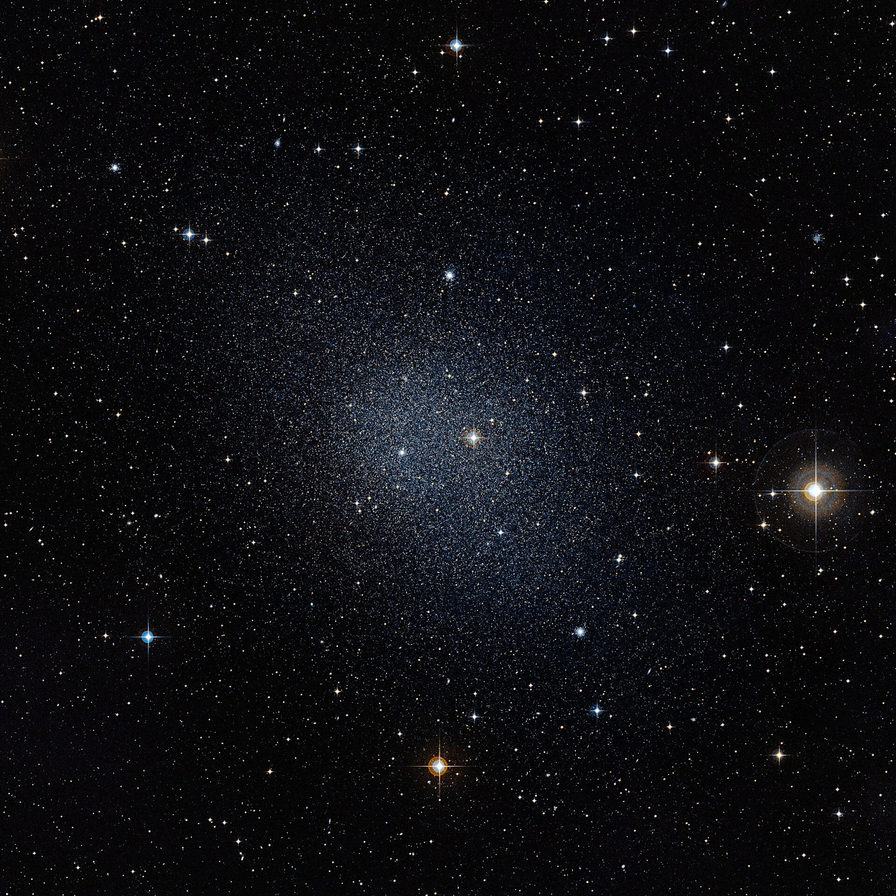

Dwarf spheroidals — small, faint, and almost entirely dark matter
Dwarf spheroidal galaxies are the most numerous galaxies in the Local Group and the most dark-matter-dominated objects we have ever measured — mass-to-light ratios of 100, 500, even 1000 — far higher than any spiral.
Dwarf spheroidals (often abbreviated dSph) are small, faint, gas-poor, roughly elliptical satellites of larger galaxies. Around the Milky Way, the brighter members are Sagittarius, Sculptor, Fornax, Draco, Ursa Minor, Leo I, Leo II, Sextans, Carina, Canes Venatici I, plus a long tail of ultra-faint dwarfs discovered by SDSS, DES, Pan-STARRS, and now the Vera C. Rubin Observatory's LSST. The total count of known Milky Way dSph satellites is now over 60 and rising. Each typically has only millions to tens of millions of stars — compared to the Milky Way's hundreds of billions — and was for decades dismissed as boring stragglers. The picture changed in the 1980s when stellar-velocity-dispersion measurements showed they were anything but boring.
The story of dwarf-spheroidal dark matter starts with Marc Aaronson at the Lowell Observatory in 1983. He measured the velocity dispersion of red giants in Draco and Ursa Minor and found they moved much faster than the visible stellar mass could gravitationally bind. To hold the stars together, each system needed mass roughly 100× greater than the visible stellar mass. Subsequent decades of measurement (Walker, Mateo, Kleyna, McConnachie, Battaglia, and many others) confirmed and extended this: the brightest dSphs have mass-to-light ratios around 30, the dimmer ones around 100-300, and the ultra-faint dwarfs (Segue 1, Boötes II, Reticulum II) have mass-to-light ratios of 500-3000. These objects are essentially balls of dark matter with a sprinkling of stars trapped at the bottom of the potential well.
Why this matters cosmologically. Standard ΛCDM cosmology predicts that galaxy formation proceeds hierarchically: small dark-matter halos form first, then merge into larger ones. The Milky Way's halo formed by accreting hundreds of smaller dark-matter clumps over its lifetime. Most of those clumps had little or no baryonic mass attached and remain dark and undetectable. But the ones that did acquire and retain some stars are exactly the dwarf spheroidals we see today — sub-halo remnants that the Milky Way has eaten but not fully digested. The dwarfs are direct evidence for the existence of dark matter at sub-galactic scales, AND they are the empirical test for whether dark matter behaves as cold and collisionless as ΛCDM assumes. Several dSph properties (the 'core-cusp problem', the 'too-big-to-fail problem') still don't fit ΛCDM neatly — they are at the centre of every alternative-dark-matter discussion today (warm DM, self-interacting DM, fuzzy DM, primordial-black-hole DM).
Some dSphs are actively being torn apart by Milky Way tides. The Sagittarius Dwarf Galaxy at 22 kpc is the canonical example: its stellar stream wraps around the Milky Way more than once, mapped star by star using SDSS + 2MASS + Gaia data. The Sagittarius stream is the strongest single piece of evidence we have for the Milky Way's potential shape (you can fit the stream's 3D path against models of Milky Way mass distribution and constrain whether the dark halo is spherical, oblate, or triaxial). The disrupted galaxy is being slowly digested over the next ~1 Gyr; the Milky Way has done this to dozens of dwarfs over cosmic time, and the Andromeda Stream and other tidal features in M31's halo show Andromeda has done the same. Galactic cannibalism is how spirals grow.

SEE IN THE APP
- /explore Multiple dwarf-spheroidal sprites in the Local Group overlay (Sagittarius, Sculptor, Fornax, Draco, Ursa Minor, Leo I, Leo II, Sextans)